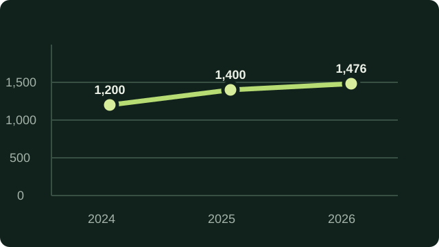

LAB 02 · IMAGE DESCRIPTIONS
Give every image a purpose.
Informative images need useful descriptions. Decorative images need empty alt text. A linked logo should explain where it goes.
Four images · Four decisions
What should a screen reader hear?
alt="" keeps extra noise out.
Run a quick check for missing, generic, or misplaced alternative text.
Week 9 accessibility lab · Mahmudjon